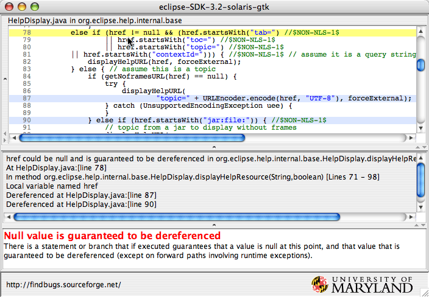

FindBugs Change Log, Version 1.3.9
Changes since version 1.3.8
- New bug patterns; in some cases, bugs previous reported as other bug patterns are reported as instances of these new bug patterns in order to make it easier for developers to understand the bug reports
- BC_IMPOSSIBLE_DOWNCAST
- BC_IMPOSSIBLE_DOWNCAST_OF_TOARRAY
- EC_INCOMPATIBLE_ARRAY_COMPARE
- JLM_JSR166_UTILCONCURRENT_MONITORENTER
- LG_LOST_LOGGER_DUE_TO_WEAK_REFERENCE
- NP_CLOSING_NULL
- RC_REF_COMPARISON_BAD_PRACTICE
- RC_REF_COMPARISON_BAD_PRACTICE_BOOLEAN
- RV_RETURN_VALUE_OF_PUTIFABSENT_IGNORED
- SIC_THREADLOCAL_DEADLY_EMBRACE
- UR_UNINIT_READ_CALLED_FROM_SUPER_CONSTRUCTOR
- VA_FORMAT_STRING_EXPECTED_MESSAGE_FORMAT_SUPPLIED
- Providing a bug rank (1-20), and the ability to filter by bug rank. Eventually, it will be possible to specify your own rules for ranking bugs, but the procedure for doing so hasn't been specified yet.
- Fixed about 45 bugs filed through SourceForge
- Various reclassifications and priority tweaks
- Added more bug annotations to a variety of bug reports. This provides more context for understanding bug reports (e.g., if the value in question was is the return value of a method, the method is described as the source of the value in a bug annotation). This also provide more accurate tracking of issues across versions of the code being analyzed, but has the downside that when comparing results from FindBugs 1.3.8 and FindBugs 1.3.9 on the same version of code being analyzed, FindBugs may think that mistakenly believe that the issue reported by 1.3.8 was fixed and a new issue was introduced that was reported by FindBugs 1.3.9. While annoying, it would be unusual for more than a dozen issues per million lines of codes to be mistracked.
- Lots of internal changes moving towards FindBugs 2.0, but these features are undocumented, not yet officially supported, and subject to radical changes before FindBugs 2.0 is released.
Changes since version 1.3.7
- Primarily another small bugfix release.
- FindBugs base:
- New Reports:
- SF_SWITCH_NO_DEFAULT: missing default case in switch statement.
- SF_DEAD_STORE_DUE_TO_SWITCH_FALLTHROUGH_TO_THROW: value ignored when switch fallthrough leads to thrown exception.
- INT_VACUOUS_BIT_OPERATION: bit operations that don't do any meaningful work.
- FB_UNEXPECTED_WARNING: warning generated that conflicts with @NoWarning FindBugs annotation.
- FB_MISSING_EXPECTED_WARNING: warning not generated despite presence of @ExpectedWarning FindBugs annotation.
- NOISE category: intended for use in data mining experiments.
- NOISE_NULL_DEREFERENCE: fake null point dereference warning.
- NOISE_METHOD_CALL: fake method call warning.
- NOISE_FIELD_REFERENCE: fake field dereference warning.
- NOISE_OPERATION: fake operation warning.
- Other:
- Garvin Leclaire has created a new Apache Maven repository for FindBugs at the Google Code FindBugs SVN repository. (Thanks Garvin!)
- Fixes:
- [ 2317842 ] Highlighting broken in Windows
- [ 2515908 ] check for oddness should track sign of argument
- [ 2487936 ] "L B GC" false pos cast from Map.Entry.getKey() to Map.get()
- [ 2528264 ] Ant tasks not compatible with Ant 1.7.1
- [ 2539590 ] SF_SWITCH_FALLTHROUGH wrong message reported
- [ 2020066 ] Bug history displayed in fancy-hist.xsl is incorrect
- [ 2545098 ] Invalid character in analysis results file
- [ 2492673 ] Plugin sites should specify 'requires Eclipse 3.3 or newer'
- [ 2588044 ] a tiny typing error
- [ 2589048 ] Documentation for convertXmlToText insufficient
- [ 2638739 ] NullPointerException when building
- Patches:
- [ 2538184 ] Make BugCollection implement Iterable<BugInstance> (thanks to Tomas Pollak)
- [ 2249771 ] Add Maven2 Findbugs plugin link to the Links page (thanks to Garvin Leclaire)
- [ 2609526 ] Japanese manual update (thanks to K. Hashimoto)
- [ 2119482 ] CheckBcel checks for nonexistent classes (thanks to Jerry James)
- FindBugs Eclipse plugin:
- Major feature enhancements (thanks to Andrei Loskutov). See this overview for more information.
- Major test improvements (thanks to Tomas Pollak).
- Fixes:
- [ 2532365 ] Compiler warning
- [ 2522989 ] Fix filter files selection
- [ 2504068 ] NullPointerException
- [ 2640849 ] NPE in Eclipse plugin 1.3.7 and Eclipse 3.5 M5
- Patches:
- [ 2143140 ] Unchecked conversion fixes for Eclipse plugin (thanks to Jerry James)
Changes since version 1.3.6
- Overall, a small bugfix release.
- New detection of accidental vacuous/useless calls to EasyMock methods, and of generic signatures that proclaim the use of unhashable classes in ways that require that they be hashed.
- Eliminate some false positives where we were warning about a useless call (e.g., comparing two incompatible types for equality), but the only thing the code was doing with the result was passing it to assertFalse.
- Japanese localization and manual by K.Hashimoto. (Thanks!)
- Added -exclude and -outputDir command line options to rejarForAnalysis
- Extended -adjustPriorities option to FindBugs analysis textui so that you
can modify the priorities of individual bug patterns as well as visitors,
and also completely suppress individual bug patterns or visitors.
- e.g., -adjustPriority MS_SHOULD_BE_FINAL=suppress,MS_PKGPROTECT=suppress,EI_EXPOSE_REP=suppress,EI_EXPOSE_REP2=suppress,PZLA_PREFER_ZERO_LENGTH_ARRAYS=raise
Changes since version 1.3.5
- Added fairly exhaustive static analysis of uses of format strings, checking for missing or extra arguements, invalid format specifiers, or mismatched format specifiers and arguments (e.g, passing a String value for a %d format specifier). The logic for doing so is derived from Sun's java.util.Formatter class, and available separately from FindBugs as part of the jFormatString project.
- More tuning of the unsatisfied obligation detector. Since this detector is still rather noisy and an unfinished research project, I've moved the generated issues to a new category: EXPERIMENTAL.
- Added check for BIT_ADD_OF_SIGNED_BYTE; similar to BIT_IOR_OF_SIGNED_BYTE, except that addition is being used to combine shifted signed bytes.
- Changed detection of EI_EXPOSE_REP2, so we only report it if the value stored is guaranteed to be the same value that was passed in as a parameter.
- Added EQ_CHECK_FOR_OPERAND_NOT_COMPATIBLE_WITH_THIS, a warning when an equals method checks to see if an operand is an instance of a class not compatible with itself. For example, if the Foo class checks to see if the argument is an instance of String. This is either a questionable design decision or a coding mistake.
- Added DMI_INVOKING_HASHCODE_ON_ARRAY,
which checks for invoking
hashCode()on an array, which returns a hash code that ignores the contents of the array. - Added checks for using
x.removeAll(x)to rather thanx.clear()to clear an array. - Add checks for calls such as
x.contains(x),x.remove(x)andx.containsAll(x). - Improvements to Eclipse plugin (thanks to Andrei Loskutov):
- Report separate markers for each occurrence of an issue that appears multiple times in a method
- fine tuning for reported markers: add only one marker for fields, add marker on right position
- link bugs selected in bug explorer view to the opened editor and vice versa
- select bugs selected in editor ruler in the opened bug explorer view
- consistent abbreviations used in both bug explorer and bug details view
- added "Expand All" button to the bug explorer view
- added "Go Into/Go Up" buttons to the bug explorer view
- added "Copy to clipboard" menu/functionality to the details view list widget
- fix for CNF exception if loading the backup solution for broken browser widget
Changes since version 1.3.4
- Analysis about 15% faster
- 38 bugs closed
- New defect warnings:
- calls to methods that always throw UnsupportedOperationException (DMI_UNSUPPORTED_METHOD)
- repeated conditional tests (e.g.,
if (x < 0 || x < 0) ...) (RpC_REPEATED_CONDITIONAL_TEST) - Complete rewrite of detector for format string problems. More accurate, finds more problems, generates more descriptive reports, several different bug pattern (VA_FORMAT_STRING_EXTRA_ARGUMENTS_PASSED, VA_FORMAT_STRING_ILLEGAL, VA_FORMAT_STRING_MISSING_ARGUMENT, VA_FORMAT_STRING_BAD_ARGUMENT, VA_FORMAT_STRING_NO_PREVIOUS_ARGUMENT)
- Fairly complete implementation of JSR-305 custom type qualifier analysis (no support for custom validators yet). (TQ_MAYBE_SOURCE_VALUE_REACHES_NEVER_SINK TQ_EXPLICIT_UNKNOWN_SOURCE_VALUE_REACHES_ALWAYS_SINK TQ_EXPLICIT_UNKNOWN_SOURCE_VALUE_REACHES_NEVER_SINK)
- New detector for unsatisfied obligations such forgetting to close a file (OBL_UNSATISFIED_OBLIGATION).
- Warning when a parameter is marked as nullable, but is always dereferenced. (NP_PARAMETER_MUST_BE_NONNULL_BUT_MARKED_AS_NULLABLE)
- Separate warning for dereference the result of readLine (NP_DEREFERENCE_OF_READLINE_VALUE)
- When XML is generated with messages, the project stats now include <FileStat> elements. For each source file, this gives the path for the file, the total number of warnings for that file, and a bugHash for the file. While the instanceHash for a bug is intended to be version invariant (ignoring line numbers, etc), the bugHash for a file is intended to reflect all the information about the warnings in that file. The intended use case is that if the bugHash for a file is the same in two analysis runs, then nothing has changed about any of the warnings reported for that file between the two analysis runs.
- More merging of similar issues within a method. For example, if the result of readLine() is dereferences multiple times within a method, it will be reported as a single warning with occurrences at multiple source lines.
Changes since version 1.3.3
- FindBugs base
- New Reports:
- EQ_OVERRIDING_EQUALS_NOT_SYMMETRIC: equals method overrides equals in superclass and may not be symmetric
- EQ_ALWAYS_TRUE: equals method always returns true
- EQ_ALWAYS_FALSE: equals method always returns false
- EQ_COMPARING_CLASS_NAMES: equals method compares class names rather than class objects
- EQ_UNUSUAL: Unusual equals method
- EQ_GETCLASS_AND_CLASS_CONSTANT: equals method fails for subtypes
- SE_READ_RESOLVE_IS_STATIC: The readResolve method must not be declared as a static method.
- SE_PRIVATE_READ_RESOLVE_NOT_INHERITED: private readResolve method not inherited by subclasses
- MSF_MUTABLE_SERVLET_FIELD: Mutable servlet field
- XSS_REQUEST_PARAMETER_TO_SEND_ERROR: Servlet reflected cross site scripting vulnerability
- SKIPPED_CLASS_TOO_BIG: Class too big for analysis
- Other:
- Value-number analysis now more space-efficient
- Enhancements to reduce memory overhead when analyzing very large classes
- Now skips very large classes that would otherwise take too much time and memory to analyze
- Infrastructure for tracking effectively-constant/ effectively-final fields
- Added more cweids
- Enhanced taint tracking for taint-based detectors
- Ignore doomed calls to equals if result is used as an argument to assertFalse
- EQ_OVERRIDING_EQUALS_NOT_SYMMETRIC handles compareTo
- Priority tweak for ICAST_INTEGER_MULTIPLY_CAST_TO_LONG (only low priority if multiplying by 1000)
- Improved tracking of fields across method calls
- Fixes:
- [ 1941450 ] DLS_DEAD_LOCAL_STORE not reported
- [ 1953323 ] Omitted break statement in SynchronizeAndNullCheckField
- [ 1942620 ] Source Directories selection dialog interface confusion (partial)
- [ 1948275 ] Unhelpful "Load of known null"
- [ 1933922 ] MWM error in findbugs
- [ 1934772 ] 1.3.3 appears to rely on JDK 1.6, JNLP still specifies 1.5
- [ 1933945 ] -loadbugs doesn't work
- Fixed problems for class names starting with '$'
- Fixed bugs and incomplete handling of annotations in VersionInsensitiveBugComparator
- Patches:
- [ 1955106 ] Javadoc fixes
- [ 1951930 ] Superfluous import statements (thanks to Jerry James)
- [ 1951907 ] Missing @Deprecated annotations (thanks to Jerry James)
- [ 1951876 ] Infonode Docking Windows compile fix (thanks to Jerry James)
- [ 1936055 ] bugfix for findbugs.de.comment not working (thanks to Peter Fokkinga)
- FindBugs BlueJ plugin
- Updated to use FindBugs 1.3.4 (first new release since 1.1.3)
Changes since version 1.3.2
- FindBugs base
- New Detectors:
- FieldItemSummary: Produces summary information for what is stored into fields
- SynchronizeOnClassLiteralNotGetClass: Look for code that synchronizes on the results of getClass rather than on class literals
- SynchronizingOnContentsOfFieldToProtectField: This detector looks for code that seems to be synchronizing on a field in order to guard updates of that field
- New BugCode:
- HRS: HTTP Response splitting vulnerability
- WL: Possible locking on wrong object
- New Reports:
- DMI_CONSTANT_DB_PASSWORD: This code creates a database connect using a hard coded, constant password
- HRS_REQUEST_PARAMETER_TO_COOKIE: HTTP cookie formed from untrusted input
- HRS_REQUEST_PARAMETER_TO_HTTP_HEADER: HTTP parameter directly written to HTTP header output
- CN_IMPLEMENTS_CLONE_BUT_NOT_CLONEABLE: Class defines clone() but doesn't implement Cloneable
- DL_SYNCHRONIZATION_ON_BOXED_PRIMITIVE: Synchronization on boxed primitive could lead to deadlock
- DL_SYNCHRONIZATION_ON_BOOLEAN: Synchronization on Boolean could lead to deadlock
- ML_SYNC_ON_FIELD_TO_GUARD_CHANGING_THAT_FIELD: Synchronization on field in futile attempt to guard that field
- DLS_DEAD_LOCAL_STORE_IN_RETURN: Useless assignment in return statement
- WL_USING_GETCLASS_RATHER_THAN_CLASS_LITERAL: Synchronization on getClass rather than class literal
- Other:
- Many enhancements to cross-site scripting detector and its documentation
- Enhanced switch fall through handling
- Enhanced unread field handling (look for IF_ACMPEQ and IF_ACMPNE)
- Clarified documentation for @Nullable in manual
- Fewer DeadLocalStore false positives
- Fewer UnreadField false positives
- Fewer StaticCalendarDetector false positives
- Performance fix for slow file system IO e.g. Clearcase repositories (thanks, Andrei!)
- Other, general performance enhancements (thanks, Andrei!)
- Enhancements for using FindBugs scripts with MKS on Windows (thanks, Kelly O'Hair!)
- Noted in the manual that jsr305.jar must be present for annotations to compile
- Added and fine-tuned default-nullness annotations
- More CWE IDs added
- Check and warning for unexpected BCEL version in classpath
- Fixes:
- Bug fix to handling of local variable tables in BCEL
- Refined documentation for MTIA_SUSPECT_STRUTS_INSTANCE_FIELD
- [ 1927295 ] NPE when called on project root
- [ 1926405 ] Incorrect dead store warning
- [ 1926409 ] Incorrect redundant nullcheck warning
- [ 1926389 ] Wrong line number printed/highlighted in bug
- [ 1927040 ] typo in bug description
- [ 1926263 ] Minor glitch in HTML output
- [ 1926240 ] Minor error in standard options in manual
- [ 1926236 ] Minor bug in installation section of manual
- [ 1925539 ] ZIP is default file system code base
- [ 1894701 ] Livelock / memory leak in ObjectTypeFactory (thanks, Andrei!)
- [ 1867491 ] Doesn't reload annotations after code changes in IDE (thanks, Andrei!)
- [ 1921399 ] -project option not supported
- [ 1913834 ] "Dead" store to variable with method call
- [ 1917352 ] H B se:...field in serializable class
- [ 1911617 ] CloneIdiom relies on getNameConstantOperand for INSTANCEOF
- [ 1911620 ] False +: DLS predecrement before return
- [ 1871376 ] False negative: non-serializable Map field
- [ 1871051 ] non standard clone() method
- [ 1908854 ] Error in TestASM
- [ 1907539 ] 22 minor errors in bug checker documentation
- [ 1897323 ] EJB implementation class false positives
- [ 1899648 ] Crash on startup on Vista with Java 1.6.0_04
- FindBugs Eclipse plugin (change log by Andrei Loskutov)
- new feature: export basic FindBugs numbers for projects via File->Export->Java->BugCounts (Andrei Loskutov)
- new feature: jobs for different projects will be run in parallel per default if running on a multi-core PC ("fb.allowParallelBuild" system property not used anymore) (Andrei Loskutov)
- fixed performance slowdown in the multi-threaded build, caused by workspace operation locks during assigning marker attributes (Andrei Loskutov)
Changes since version 1.3.1
- FindBugs base
- New Bug Category:
- SECURITY (Abbrev: S), A use of untrusted input in a way that could create a remotely exploitable security vulnerability
- New Detectors:
- CrossSiteScripting: This detector looks for obvious/blatant cases of cross site scripting vulnerabilities
- New BugCode:
- XSS: Cross site scripting
- New Reports:
- XSS_REQUEST_PARAMETER_TO_SERVLET_WRITER: HTTP parameter directly written to Servlet output, giving XSS vulnerability
- XSS_REQUEST_PARAMETER_TO_JSP_WRITER: HTTP parameter directly written to JSP output, giving XSS vulnerability
- EQ_OTHER_USE_OBJECT: equals() method defined that doesn't override Object.equals(Object)
- EQ_OTHER_NO_OBJECT: equals() method inherits rather than overrides equals(Object)
- NP_NULL_ON_SOME_PATH_MIGHT_BE_INFEASIBLE: Possible null pointer dereference on path that might be infeasible
- Other:
- Added -noClassOk command-line parameter to command-line and ant interfaces; when -noClassOk is specified and no classfiles are given, FindBugs will print a warning message and output a well- formed file with no warnings
- Fewer false positives for null pointer bugs
- Suppress dead-local-store false positives in .jsp code
- Type fixes in warning messages
- Better warning message for NP_NULL_ON_SOME_PATH
- "WMI" bug code description renamed from "Wrong Map Iterator" to "Inefficient Map Iterator"
- Fixes:
- [ 1893048 ] FindBugs confused by a findbugs.xml file
- [ 1878528 ] XSL xforms don't support history features
- [ 1876584 ] two default.xsl flaws
- [ 1874856 ] Format string bug detector doesn't handle special operators
- [ 1872645 ] computeBugHistory - java.lang.IllegalArgumentException
- [ 1872237 ] Ant task fails when no .class files
- [ 1868670 ] Filters: include AND exclude don't allowed
- [ 1868666 ] check-for-oddness reported, but array length can never be negative
- [ 1866108 ] SetBugDatabaseInfoTask strips dir from output filename
- [ 1866021 ] MineBugHistoryTask strips dir of output filename
- [ 1865265 ] code doesn't handle StringBuffer.append([CII) right
- [ 1864793 ] Warning when casting a null reference compared to a String
- [ 1863376 ] Typo in manual chap 8: Filter Files
- [ 1862705 ] Transient fields that default to null
- [ 1842545 ] DLS on catch variable (with priority tweaking)
- [ 1816258 ] false positive BC_IMPOSSIBLE_CAST
- [ 1551732 ] Get erroneous DLS with while loop
- FindBugs Eclipse plugin (change log by Andrei Loskutov)
- new feature: added Bug explorer view (replacing Bug tree view), based on Common Navigator framework (Andrei Loskutov)
- bug 1873860 fixed: empty projects are no longer shown in Bug tree view (Andrei Loskutov)
- new feature: bug counts decorators for projects, folders and files (has to be activated via Preferences -> general -> appearance -> label decorations)(Andrei Loskutov)
- patch 1746499: better icons (Alessandro Nistico)
- patch 1893685: Find bug actions on change sets bug (Alessandro Nistico)
- fixed bug 1855384: Bug configuration is broken in Eclipse (Andrei Loskutov)
- refactored FindBugs properties page (Andrei Loskutov)
- refactored FindBugs worker/builder/run action (Andrei Loskutov)
- FB detects now only bugs from classes on project's classpath (no double work on duplicated class files) (Andrei Loskutov)
- fixed bug introduced by the bad patch for 1867951: FB cannot be executed incrementally on a folder of file (Andrei Loskutov)
- fixed job rule: now jobs for different projects may run in parallel if running on a multi-core PC and "fb.allowParallelBuild" system property is set to true (Andrei Loskutov)
- fixed FB auto-build not started if .fbprefs or .classpath was changed (Andrei Loskutov)
- fixed not reporting bugs on secondary types (classes defined in java files with different name) (Andrei Loskutov)
Changes since version 1.3.0
- New Reports
- VA_FORMAT_STRING_ARG_MISMATCH: A format-string method with a variable number of arguments is called, but the number of arguments passed does not match with the number of % placeholders in the format string. This is probably not what the author intended.
- IO_APPENDING_TO_OBJECT_OUTPUT_STREAM: This code opens a file in append mode and that wraps the result in an object output stream. This won't allow you to append to an existing object output stream stored in a file. If you want to be able to append to an object output stream, you need to keep the object output stream open. The only situation in which opening a file in append mode and the writing an object output stream could work is if on reading the file you plan to open it in random access mode and seek to the byte offset where the append started.
- NP_BOOLEAN_RETURN_NULL: A method that returns either Boolean.TRUE, Boolean.FALSE or null is an accident waiting to happen. This method can be invoked as though it returned a value of type boolean, and the compiler will insert automatic unboxing of the Boolean value. If a null value is returned, this will result in a NullPointerException.
- Changes to Existing Reports
- RV_DONT_JUST_NULL_CHECK_READLINE: CORRECTNESS -> STYLE
- DMI_INVOKING_TOSTRING_ON_ARRAY: Long description mentions array name whenever possible
- Fixes:
- Updated manual to mention that Java 1.5 is now a requirement for running FindBugs
- Applied patch 1840206 fixing issue "Ant task does not work when presetdef is used" - thanks to phejl
- Applied patch 1778690 fixing issue "Ant task: tolerate but complain about invalid auxClasspath" - thanks to David Schmidt
- Applied patch 1852125 adding a Chinese-language GUI bundle props file - thanks to fifi
- Applied patch 1845903 adding ability to load XML results with the Eclipse plugin - thanks to Alex Mont
- Fixed issue 1844671 - "FP for "reversed" null check in catch for stream close"
- Fixed issue 1836050 - "-onlyAnalyze broken"
- Fixed issue 1853011 - "Typo: Field names should start with aN lower case letter"
- Fixed issue 1844181 - "JNLP file does not contain all necessary JARs"
- Fixed issue 1840245 - "xxxException class does not derive from Exception"
- Fixed issue 1840277 - "[M D EC] Typo in bug documentation"
- Fixed issue 1782447 - "OutOfMemoryError if i activate Findbugs on my project"
- Fixed issue 1830576 - "[regression] keySet/entrySet false positive"
- Other:
- New bug code: "IO" (for IO_APPENDING_TO_OBJECT_OUTPUT_STREAM)
- Added "-onlyMostRecent" option for computeBugHistory script/ant task
- More explicit language in RV_RETURN_VALUE_IGNORED_BAD_PRACTICE messages
- Modified ResourceValueAnalysis to correctly identify null == X or null != X as a null check (for issue 1844671)
- Modified DMI_HARDCODED_ABSOLUTE_FILENAME logic in DumbMethodInvocations to ignore files from /etc or /dev and increase priority of files from /home
- Better bug details for infinite loop warnings
- Modified unread-fields detector to reduce false positives from reflective fields
- build.xml "classes" target now builds all sources in one step
Changes since version 1.2.1
- New Detectors and Reports
- SynchronizationOnSharedBuiltinConstant
- DL_SYNCHRONIZATION_ON_SHARED_CONSTANT: The code synchronizes on a shared primitive constant, such as an interned String. Such constants are interned and shared across all other classes loaded by the JVM. Thus, this could be locking on something that other code might also be locking. This could result in very strange and hard to diagnose blocking and deadlock behavior. See http://www.javalobby.org/java/forums/t96352.html and http://jira.codehaus.org/browse/JETTY-352.
- OverridingEqualsNotSymmetrical
- EQ_OVERRIDING_EQUALS_NOT_SYMMETRIC: Looks for equals methods that override equals methods in a superclass where the equivalence relationship might not be symmetrical.
- CheckTypeQualifiers
- TQ_ALWAYS_VALUE_USED_WHERE_NEVER_REQUIRED: A value specified as carrying a type qualifier annotation is consumed in a location or locations requiring that the value not carry that annotation. More precisely, a value annotated with a type qualifier specifying when=ALWAYS is guaranteed to reach a use or uses where the same type qualifier specifies when=NEVER.
- TQ_NEVER_VALUE_USED_WHERE_ALWAYS_REQUIRED: A value specified as not carrying a type qualifier annotation is guaranteed to be consumed in a location or locations requiring that the value does carry that annotation. More precisely, a value annotated with a type qualifier specifying when=NEVER is guaranteed to reach a use or uses where the same type qualifier specifies when=ALWAYS.
- TQ_MAYBE_SOURCE_VALUE_REACHES_ALWAYS_SINK: A value that might not carry a type qualifier annotation reaches a use which requires that annotation.
- TQ_MAYBE_SOURCE_VALUE_REACHES_NEVER_SINK: A value which might carry a type qualifier annotation reaches a use which forbids values carrying that annotation.
- New Reports (existing detectors)
- FindHEmismatch
- EQ_DOESNT_OVERRIDE_EQUALS: This class extends a class that defines an equals method and adds fields, but doesn't define an equals method itself. Thus, equality on instances of this class will ignore the identity of the subclass and the added fields. Be sure this is what is intended, and that you don't need to override the equals method. Even if you don't need to override the equals method, consider overriding it anyway to document the fact that the equals method for the subclass just return the result of invoking super.equals(o).
- Naming
- NM_WRONG_PACKAGE, NM_WRONG_PACKAGE_INTENTIONAL: The method in the subclass doesn't override a similar method in a superclass because the type of a parameter doesn't exactly match the type of the corresponding parameter in the superclass.
- NM_SAME_SIMPLE_NAME_AS_SUPERCLASS:
This class has a simple name that is identical to that
of its superclass, except that its superclass is in a
different package (e.g.,
alpha.Fooextendsbeta.Foo). This can be exceptionally confusing, create lots of situations in which you have to look at import statements to resolve references and creates many opportunities to accidently define methods that do not override methods in their superclasses. - NM_SAME_SIMPLE_NAME_AS_INTERFACE:
This class/interface has a simple name that is
identical to that of an implemented/extended
interface, except that the interface is in a different
package (e.g.,
alpha.Fooextendsbeta.Foo). This can be exceptionally confusing, create lots of situations in which you have to look at import statements to resolve references and creates many opportunities to accidently define methods that do not override methods in their superclasses.
- FindRefComparison
- EC_UNRELATED_TYPES_USING_POINTER_EQUALITY: This method uses using pointer equality to compare two references that seem to be of different types. The result of this comparison will always be false at runtime.
- IncompatMask
- BIT_SIGNED_CHECK, BIT_SIGNED_CHECK_HIGH_BIT: This method compares an expression such as ((event.detail & SWT.SELECTED) > 0). Using bit arithmetic and then comparing with the greater than operator can lead to unexpected results (of course depending on the value of SWT.SELECTED). If SWT.SELECTED is a negative number, this is a candidate for a bug. Even when SWT.SELECTED is not negative, it seems good practice to use '!= 0' instead of '> 0'.
- LazyInit
- LI_LAZY_INIT_UPDATE_STATIC: This method contains an unsynchronized lazy initialization of a static field. After the field is set, the object stored into that location is further accessed. The setting of the field is visible to other threads as soon as it is set. If the further accesses in the method that set the field serve to initialize the object, then you have a very serious multithreading bug, unless something else prevents any other thread from accessing the stored object until it is fully initialized.
- FindDeadLocalStores
- DLS_DEAD_STORE_OF_CLASS_LITERAL:
This instruction assigns a class literal to a variable
and then never uses it.
The behavior of this differs in Java 1.4 and in Java 5.
In Java 1.4 and earlier, a reference to
Foo.classwould force the static initializer forFooto be executed, if it has not been executed already. In Java 5 and later, it does not. See Sun's article on Java SE compatibility for more details and examples, and suggestions on how to force class initialization in Java 5. - MethodReturnCheck
- RV_RETURN_VALUE_IGNORED_BAD_PRACTICE:
This method returns a value that is not checked. The
return value should be checked since it can indication
an unusual or unexpected function execution. For
example, the
File.delete()method returns false if the file could not be successfully deleted (rather than throwing an Exception). If you don't check the result, you won't notice if the method invocation signals unexpected behavior by returning an atypical return value. - RV_EXCEPTION_NOT_THROWN: This code creates an exception (or error) object, but doesn't do anything with it.
- Changes to Existing Reports
- NS_NON_SHORT_CIRCUIT: BAD_PRACTICE -> STYLE
- NS_DANGEROUS_NON_SHORT_CIRCUIT: CORRECTNESS -> STYLE
- RC_REF_COMPARISON: CORRECTNESS -> BAD_PRACTICE
- GUI Changes
- Added importing and exporting of bug filters
- Better handling of failed analysis runs
- Added "-look" parameter for selecting look-and-feel
- Fixed incorrect package filtering
- Fixed issue where "synchronized" was not syntax-highlighted
- Ant-task Changes
- Refactored common ant-task code to AbstractFindBugsTask
- Added tasks for computeBugHistory, convertXmlToText, filterBugs, mineBugHistory, setBugDatabaseInfo
- Manual
- Updates to GUI section, including new screenshots
- Added description of rejarForAnalysis
- Revamp of data-mining section
- Other Major
- Internal restructuring for lower memory overhead
- Other Minor
- Fixed typo: was STCAL_STATIC_SIMPLE_DATA_FORMAT_INSTANCE now STCAL_STATIC_SIMPLE_DATE_FORMAT_INSTANCE
- -outputFile parameter became -output
- More sensitivity and specificity inLazyInit detector
- More sensitivity and specificity in Naming detector
- More sensitivity and specificity in UnreadFields detector
- More sensitivity in FindNullDeref detector
- More sensitivity in FindBadCast2 detector
- More specificity in FindReturnRef detector
- Many other tweaks and bug fixes
Changes since version 1.2.0
- Bug fixes:
- Fix bug with detectors that were requested to be disabled but were enabled due to requirements of other detectors.
- Fix bugs in incremental analysis within Eclipse plugin
- Fix some analysis errors
- Fix some threading bugs in GUI2
- Report version as version when it was compiled, not when it was run
- Copy analysis time stamp when filtering or transforming analysis files.
- Enabled StaticCalendarDetector
- Reworked GUI2 to use standard FindBugs filters
- Allow a suppression filter to be stored in a project and persisted to the XML representation of a project.
- Move away from old GUI2 save format (a directory containing an xml file and another file containing serialized filters).
- Support/recommend use of two new file extensions/formats:
- .fba - FindBugs Analysis File
- Exactly the same as an existing bug collection file stored in XML format, but using a distinct file extension to make it easier to figure out which xml files contain FindBugs results.
- .fbp - FindBugs Project File
- Contains just the information needed to run FindBugs and display the results (e.g., the files to be analyzed, the auxiliary class path and the location of source files)
Changes since version 1.1.3
- Added -xml:withAbridgedMessages option to generate xml containing shorter messages.
The messages will be shorted by doing things like eliding package names, and leaving off
the source line from the LongMessage.
These messages are appropriate if being used in a context where
the non-message components of the bug annotations will be used to provide more information
(e.g., clicking on the message for a MethodAnnotation will display the source for the method).
- FindBugsDisplayFeatures.setAbridgedMessages(true) can be used to generate abridged messages when FindBugs is being accessed directly (not via generated XML) from a GUI or IDE.
- In null pointer analysis, try to be better about always showing two locations: where it is known null and where it is dereferenced.
- Interprocedural analysis of which methods return nonnull values
- Use method calls to select order in which classes are analyzed, and order in which methods are analyzed, to improve interprocedural analysis results.
- Significant improvements in memory footprint, memory allocation and CPU utilization (20-30% reduction in all three)
- Added a project name, to provide better descriptions in the HTML output.
- Added new bug pattern: Casting to char, or bit masking with nonnegative value, and then checking to see if the result is negative.
- Stopped reporting transient fields of classes not marked as serializable. Transient is used by other persistence frameworks.
- Improvements to detector for SQL injection (Thanks to Matt Hargett for his contributions
- Changed open/save options in GUI2 to not distinguish between FindBugs projects and saved FindBugs analysis results.
- Improvements to detection of serious non-short-circuit evaluation.
- Updated Japanese localization (thanks to Ruimo Uno)
- Eclipse plugin changes:
- Created Bug User Annotations and Bug Tree Views
- Use different icons for different bug priorities
- Provide more information in Bug Details view
Changes since version 1.1.2:
- Fixed broken Ant task
- Added running ant task to smoke test
- Added validating xml and html output to smoke test
- Fixed some (but not all) issues with html output validation
- Added check for x.equals(x) and x.compareTo(x)
- Various bug fixes
Changes since version 1.1.1:
- Added check for infinite iterative loops
- Added check for use of incompatible types in a collection (e.g., checking to see if a Set<String> contains a StringBuffer).
- Added check for invocations of equals or hashCode on a URL, which, surprising many people, requires DNS resolution.
- Added check for classes that define compareTo but not equals; such classes can exhibit some anomalous behavior (e.g., they are treated differently by PriorityQueues in Java 5 and Java 6).
- Added a check for useless self operations (e.g., x < x or x ^ x).
- Fixed a data race that could cause the GUI to fail on startup
- Partial internationalization of the new GUI
- Fix bug in "Redo analysis" option of new GUI
- Tuning to reduce false positives
- Fixed a bug in null pointer analysis that was generating false positive null pointer warnings on exception paths. Fixing this bug eliminates about 1/4 of the warnings on null pointer exceptions on exception paths.
- Fixed a bug in the processing of phi nodes for fields in the null pointer analysis
- Applied contributed patch that provides more quick fixes in Eclipse plugin.
- Fixed a number of bugs in the Eclipse auto update sites, and in the way date qualifiers were being used in the Eclipse plugin. You may need to manually disable your existing version of the plugin and download the 1.1.2 from the update site to get the automatic update function working correctly. The Eclipse update sites are described at http://findbugs.cs.umd.edu/eclipse/.
- Fixed progress bar in Eclipse plugin
- A number of other bug fixes.
Changes since version 1.1.0:
- less scanning of classes not on the analysis path (This was causing some performance problems.)
- no unread field warnings for fields annotated with javax.persistent or javax.ejb3
-
Eclipse plugin
- bug annotation info displayed in Bug Details tab
- .fbwarnings data file now stored in .metadata (not in the project itself)
- new SE_BAD_FIELD_INNER_CLASS pattern
- updates to Japanese translation (ruimo)
- fix some internal slashed/dotted path confusion
- other minor improvements
Changes since version 1.0.0:
- Overall, the change from FindBugs 1.0.0 to FindBugs 1.1.0 has been a big change. We've done a lot of work in a lot of areas, and aren't even going to try to enumerate all the changes.
- We spent a lot of time reviewing the results generated by FindBugs for open source and commercial code bases, and made a number of changes, small and large, to minimize the number of false positives. Our primary focus for this was warnings reported as high and medium priority correctness warnings. Our internal evaluation is that we produce very few high/medium priority correctness warnings where the analysis is actually wrong, and that more than 75% of the high/medium priority correctness warnings correspond to real coding defects that need addressing in the source code. The remaining 25% are largely cases such as a branch or statement that if taken would lead to an error, but in fact is a dead branch or statement that can never be taken. Such coding is confusing and hard to maintain, so it should arguably be fixed, but it is unlikely to actually result in an error during execution. Thus, some might classify those warnings as false positives.
-
We've substantially improved the analysis for errors that could
result in null pointer dereferences. Overall, our experience has
been that these changes have roughly doubled the number of null
pointer errors we detect, without increasing the number of false
positives (in fact, our false positive rate has gone down). The
improvements are due to four factors:
- By default, we now do some interprocedural analysis to determine methods that unconditionally dereference their parameters.
- FindBugs also comes with a model of which JDK methods unconditionally dereference their parameters.
- We do limited tracking of fields, so that we can detect null values stored in fields that lead to exceptions.
-
We implemented a new analysis technique to find guaranteed
dereferences. Consider the following example:
public int f(Object x, boolean b) { int result = 0; if (x == null) result++; else result--; // at this point, we know x is null on a simple path if (b) { // at this point, x is only null on a complex path // we don't know if the path in which x is null and b is true is feasible return result + x.hashCode(); } else { // at this point, x is only null on a complex path // we don't know if the path in which x is null and b is false is feasible return result - x.hashCode(); }FindBugs 1.0 used forward dataflow analysis to determine whether each value is definitely null, null on a simple path, possible null on a complex path, or definitely nonnull. Thus, at the statement where
resultis decremented, we know thatxis definitely null, and at the point beforeif (b), we know thatxis null on a simple path. Ifxwere to be dereferenced here, we would generate a warning, because if the else branch of theif (x == null)were ever taken, a null pointer exception would result.However, in both the then and else branches of the
if (b)statement,xis only null on a complex path that may be infeasible. It might be that the program logic is such that ifxis null, thenbis never true, so generating a warning about the dereference in the then clause might be a false positive. We could try to analyze the program to determine whether it is possible forxto be null andbto be true, but that can be a hard analysis problem.However,
xis dereferenced in both the then and else branches of theif (b)statement. So at the point immediately beforeif (b), we know thatxis null on a simple path and thatxis guaranteed to be dereferenced on all paths from this point forward. FindBugs 1.1 performs a backwards data flow analysis to determine the values that are guaranteed to be dereferenced, and will generate a warning in this case.
The following screen shot of our new GUI shows an example of this analysis, as well as showing off our new GUI and points out a limitation of our current plugins for Eclipse and NetBeans. The screen shot shows a null pointer bug in HelpDisplay.java. The test for
href!=nullon line 78 suggests thathrefcould be null. If it is, thenhrefwill be dereferenced on either line 87 or on line 90, generating a NPE. Note that our analysis here also understands that passinghreftoURLEncoder.encodewill deference it, and thus treats line 87 as a dereference, even thoughhrefis not actually dereferenced at that line. Within our new GUI, all of these locations are highlighted and listed in the summary panel. In the original GUI (and in HTML output) we list all of the locations, but only the primary location is highlighted by the original GUI. In the Eclipse and NetBeans plugins, only the primary location is displayed; fixing this is on our todo list (contributions welcome).
- Preliminary support for detectors using the frameworks other than BCEL, such as the ASM bytecode framework. You may experiment with writing ASM-based detectors, but beware the API may still change (which could possibly also affect BCEL-based detectors). In general, we've started trying to move away from a deep dependence on BCEL, but that change is only partially complete. Probably best to just avoid this until we complete more work on this. This change is only visible to FindBugs plugin developers, and shouldn't be visible to FindBugs users.
-
Bug categories (CORRECTNESS, MT_CORRECTNESS, etc.) are no longer hard-coded, but rather defined in xml files associated with plugins, including the core plugin which defines the standard categories. Third-party plugins can define their own categories.
-
Several bug patterns have been moved from CORRECTNESS and STYLE into a new category, BAD_PRACTICE. The English localization of STYLE has changed from "Style" to "Dodgy."
In general, we've worked very hard to limit CORRECTNESS bugs to be real programming errors and sins of commission. We have reclassified as BAD_PRACTICE a number of bad design practices that result in overly fragile code, such as defining an equals method that doesn't accept null or defining class with a equals method that inherits hashCode from class Object.
In general, our guidelines for deciding whether a bug should be classified as CORRECTNESS, BAD_PRACTICE or STYLE are:
- CORRECTNESS
- A problem that we can recognize with high confidence and is an issue that we believe almost all developers would want to examine and address. We recommend that software teams review all high and medium priority warnings in their entire code base.
- BAD_PRACTICE
- A problem that we can recognize with high confidence and represents a clear violation of recommended and standard coding practice. We believe each software team should decide which bad practices identified by FindBugs it wants to prohibit in the team's coding standard, and take action to remedy violations of those coding standards.
- STYLE
- These are places where something strange or dodgy is going on, such as a dead store to a local variable. Typically, less than half of these represent actionable programming defects. Reviewing these warnings in any code under active development is probably a good idea, but reviewing all such warnings in your entire code base might be appropriate only in some situations. Individual or team programming styles can substantially influence the effectiveness of each of these warnings (e.g., you might have a coding practice or style in your group that confuses one of the detectors into generating a lot of STYLE warnings); you will likely want to selectively suppress or report the STYLE warnings that are effective for your group.
- Released a preliminary version of a new GUI (known internally as GUI2 -- not very creative, huh?)
- Provided standard ways to mark user designations of bug warnings (e.g., as NOT_A_BUG or SHOULD_FIX). The internal logic now records this, it is represented in the XML file, and GUI2 allows the designations to be applied (along with free-form user annotations about each warning). The user designations and annotations are not yet supported by the Eclipse plugin, but we clearly want to support it in Eclipse shortly.
-
Added a check for a bad comparison with a signed byte with a
value not in the range -128..127. For example:
boolean find200(byte b[]) { for(int i = 0; i < b.length; i++) if (b[i] == 200) return i; return -1; } - Added a checking for testing if a value is equal to Double.NaN (no value is equal to NaN, not even NaN).
- Added a check for using a class with an equals method but no hashCode method in a hashed data structure.
-
Added check for uncallable method of an anonymous inner class.
For example, in the following code, it is impossible to invoke
the initalValue method (because the name is misspelled and as a
result is doesn't override a method in ThreadLocal).
private static ThreadLocal serialNum = new ThreadLocal() { protected synchronized Object initalValue() { return new Integer(nextSerialNum++); } }; - Added check for a dead local store caused by a switch statement fall through
-
Added check for computing the absolute value of a random 32 bit
integer or of a hashcode. This is broken because
Math.abs(Integer.MIN_VALUE) == Integer.MIN_VALUE, and thus result of calling Math.abs, which is expected to be nonnegative, will in fact be negative one time out of 2 32 , which will invariably be the time your boss is demoing the software to your customers. - More careful resolution of inherited methods and fields. Some of the shortcuts we were taking in FindBugs 1.0.0 were leading to inaccurate results, and it was fairly easy to address this by making the analysis more accurate.
- Overall, analysis times are about 1.6 times longer in FindBugs 1.1.0 than in FindBugs 1.0.0. This is because we have enabled substantial additional analysis at the default effort level (the actual analysis engine is significantly faster than in FindBugs 1.0). On a recent AMD Athlon processor, analyzing JDK1.6.0 (about 1 million lines of code) requires about 15 minutes of wall clock time.
- Provided class and script (printClass) to print classfile in the human readable format produced by BCEL
- Provided -findSource option to setBugDatabaseInfo
Changes since version 0.9.7:
- fix ObjectTypeFactory bug that was suppressing some bugs
- opcode stack may determine definite zeros on some paths
- opcode stack can track some constant string concatenations (dbrosius)
- default effort performs iterative opcode analysis (but min effort does not)
- default heap size upped to 384m
- schema for XML output available: bugcollection.xsd
- fixed some internal confusion between dotted and slashed class names
-
New detectors
- CheckImmutableAnnotation.java: checks JCIP annotations
-
Updated detectors
- BadRegEx.java: understands Pattern.LITERAL, warns about "."
- FindUnreleasedLock.java: fewer false positives
- DumbMethods.java: check for vacuous comparisons to MAX_INTEGER or MIN_INTEGER, fix bugs detecting DM_NEXTINT_VIA_NEXTDOUBLE
- FindPuzzlers.java: detect n%2==1, detect toString() on array types
- FindInconsistentSync2.java: detects IS_FIELD_NOT_GUARDED
- MethodReturnCheck.java: add check for discarded newly constructed values, increase priority of some ignored constructed exceptions, better handling of bytecode compiled by Eclipse
- FindEmptySynchronizedBlock.java: better handling of bytecode compiled by Eclipse
- DoInsideDoPrivileged.java: warn if call to setAccessible isn't in doPriviledged, don't report private methods
-
LoadOfKnownNullValue.java: fix bug that was reporting false
positives on
finallyblocks - CheckReturnAnnotationDatabase.java: better checks for unstarted threads
- ConfusionBetweenInheritedAndOuterMethod.java: fewer false positives, fixed a package-handling bug
-
BadResultSetAccess.java: separate bug pattern for
PreparedStatements,
BRZAcategory folded intoSQLcategory - FindDeadLocalStores.java, FindBadCast2.java, DumbMethods.java, RuntimeExceptionCapture.java: coalesce similar bugs within a method into a single bug instance with multiple source lines
-
Eclipse plugin
- plugin ID changed from de.tobject.findbugs to edu.umd.cs.findbugs.plugin.eclipse
- support for findbugs eclipse auto-update site
-
Updated test case files
- BadRegEx.java
- JSR166.java
- ConcurrentModificationBug.java
- DeadStore.java
- InstanceOf.java
- LoadKnownNull.java
- NeedsToCheckReturnValue.java
- BadResultSetAccessTest.java
- DeadStore.java
- TestNonNull2.java
- TestImmutable.java
- TestGuardedBy.java
- BadRandomInt.java
-
six test cases added to new
TigerTrapsdirectory
- fix bug that was generating duplicate uids
-
fix bug with
-onlyAnalyze some.package.*on jdk1.4 - fix regression bug in DismantleByteCode.getRefConstantOperand()
- fix some minor bugs with the Swing GUI
- reordered some bugInstances so that source line annotations come last
- removed references to unused java system properties
- French translation updates (David Cotton)
- Japanese translation updates (Hanai Shisei)
- content cleanup for findbugs.xml and messages.xml
- references to cvs hostname updated to findbugs.cvs.sourceforge.net
- documented xdoc output options, new mineBugHistory/computeBugHistory options
Changes since version 0.9.6:
- performance improvements
- ObjectType instances are cached to reduce memory footprint
- for performance and memory reasons stateless detectors are no longer cloned, must clear their own state between .class files
- fixed bug in bytecode-set lookup for methods (was causing bad results for IS2, perhaps others)
- fix some OpcodeStack bugs with integer and long operations, perform iterative analysis when effort is max
- HTML output includes LongMessage text again (regression in 0.95 - 0.96)
-
New detectors
- CalledMethods.java: builds a list of invoked methods for other detectors to consult (non-reporting)
- UncallableMethodOfAnonymousClass.java: detect anonymous inner classes that define methods that are probably intended to but do not override methods in a superclass.
-
Updated detectors
- FindFieldSelfAssignment.java: recognize separate fields with the same name (one from superclass)
- FindLocalSelfAssignment2.java: handles backward branches better (Dave Brosius)
- FindBadCast2.java: BC_NULL_INSTANCEOF changed to NP_NULL_INSTANCEOF
- FindPuzzlers.java: eliminate false positive on setDate() (Dave Brosius)
-
Eclipse plugin
- fix serious threading bug
- preferences for Filters and effort (Peter Hendriks)
- French localization (David Cotton)
- fix bug when reporting inner classes (Peter Friese)
-
Updated test case files
- Mwn.java (Carl Burke/Dave Brosius)
- DumbMethodInvocations.java (Anto paul/Dave Brosius)
- XML output includes garbage collection duration
- French messages updated (David Cotton)
- Swing GUI shows file name after Load Bugs command
- Ant task to launch the findbugs frame (Mark McKay)
- miscellaneous code cleanup
Changes since version 0.9.5:
-
Updated detectors
- FindNullDeref.java: respect NonNull and CheckForNull field annotations
- SerializableIdiom.java: detect non-private readObject and writeObject methods
- FindRefComparison.java: smarter array comparison detection
- IsNullValueAnalysis.java: detect null instanceof
- FindLocalSelfAssignment2.java: suppress some false positives (Dave Brosius)
- FindUnreleasedLock.java: don't waste time processing classes that don't refer to java.util.concurrent.locks
- MutableStaticFields.java: report the source line (Dave Brosius)
- SwitchFallthrough.java: better handling of System.exit() (Dave Brosius)
- MultithreadedInstanceAccess.java: better handling of Servlet.init() (Dave Brosius)
- ConfusionBetweenInheritedAndOuterMethod.java: now enabled
-
Eclipse plugin
- background processing (Peter Friese)
- internationalization, Japanese localization (Takashi Okamoto)
- findbugs -onlyAnalyze option now works on windows platforms
- mineBugHistory -noTabs option for better alignment of output columns
- filterBugs -fixed option (also: will now recognize the most recent version string)
- XML output includes running time and memory usage data
- miscellaneous minor corrections to the manual
- better bytecode analysis of the iinc instruction
- fix bug in null pointer analysis
- improved catch block heuristics
- some type analysis tweaks
-
Bug priority changes
- DumbMethodInvocations.java: decrease priority of hard-coded /tmp filenames
- ComparatorIdiom.java: decrease priority of non-serializable anonymous comparators
- FindSqlInjection.java: decrease priority of appending a constant or a static
-
Updated bug explanations
- NM_VERY_CONFUSING (Dave Brosius)
-
Updated test case files
- BadStoreOfNonSerializableObject.java
- BadRandomInt.java
- TestFieldAnnotations.java
- UseInitCause.java
- SqlInjection.java
- ArrayEquality.java
- BadIntegerOperations.java
- Pilhuhn.java
- InstanceOf.java
- SwitchFallthrough.java (Dave Brosius)
- fix URL decoding bug when running under Java Web Start (Dave Brosius)
- distribution includes project.xml file for NetBeans
Changes since version 0.9.4:
-
New detectors
- VarArgsProblems.java
- FindSqlInjection.java: now enabled
- ComparatorIdiom.java: comparators usually implement serializable
- Naming.java: detect methods not overridden due to eponymously typed args from different packages
-
Updated detectors
- SwitchFallthrough.java: surpress some false positives
- DuplicateBranches.java: surpress some false positives
- IteratorIdioms.java: surpress some false positives
- FindHEmismatch.java: surpress some false positives
- QuestionableBooleanAssignment.java: finds more cases of if (b=true) ilk
- DumbMethods.java: detect int remainder by 1, delayed gc errors
- SerializableIdiom.java: detect store of nonserializable object into field of serializable class
- FindNullDeref.java: fix potential exception
- IsNullValue.java: fix potential exception
- MultithreadedInstanceAccess.java: fix potential exception
- PreferZeroLengthArrays.java: flag the method, not the line
- Remove some inadvertent dependencies on JDK 1.5
- Sort order should be more consistent
-
XML output changes
- Option to sort XML bug output
- Now contains instance IDs
- uid no longer missing (was causing problems with fancy HTML output)
- Typo fixed
- Internal changes to track source files, -sourceInfo option
- Bug matching: first try exact bug pattern matching, option to compare priorities, option to disable package moves
- Architecture documentation in design/architecture
- Test cases move into their own CVS project
- Don't report warnings that occur outside the analyzed classes
- Fixes to the build.xml files
- Better handling of @CheckReturnValue and @CheckForNull annotations (also, some additional methods searched for check return value and check for null)
- Fixed some stream-closing bugs (one by z-fb-user/Dave Brosius)
-
Bug priority changes
- increase priority of ignoring return value of java.sql.Connection methods
- increase priority of comparing classes like Integer using ==
- decrease priority of IT_NO_SUCH_ELEMENT if we see any call to next()
- tweak priority of NM_METHOD_CONSTRUCTOR_CONFUSION
- decrease priority of RV_RETURN_VALUE_IGNORED for an inherited annotation that doesn't return same type as class
-
Updated bug explanations
- RCN_REDUNDANT_NULLCHECK_WOULD_HAVE_BEEN_A_NPE
- DP_CREATE_CLASSLOADER_INSIDE_DO_PRIVILEGED
- IMA_INEFFICIENT_MEMBER_ACCESS (Dave Brosius)
- some Japanese improvements to messages_ja.xml ( ruimo)
- some German improvements to findbugs_de.properties (Dave Brosius, dvholten)
-
Updated test case files
- BadIntegerOperations.java
- SecondKaboom.java
- OpenDatabase.java (Dave Brosius)
- FindOpenStream.java (Dave Brosius)
- BadRandomInt.java
- Source-lines info maintained for methods (handy for abstract and native methods)
- Remove surrounding opcodes from source line annotations
- Better error when can't read file
- Swing GUI: removed console pane from FindBugsFrame, fix missing classes bug
- Fixes to OpcodeStack.java
- Detectors may attach a custom value to an OpcodeStack.Item (Dave Brosius)
- Filter.java: ability to add text messages to XML output, fix bug with -withMessages
- SourceInfoMap supports ranges of source lines
- Ant task supports the timestampNow attribute
Changes since version 0.9.3:
- Substantial rework of datamining code
- Removed bogus warnings about await on things other than Condition not being in a loop
- Fixed bug in OpcodeStack handling of dup2 of long/double values
- Don't report array types as missing classes
- Adjustment of some warnings on ignored return values
- Added thread safety annotations from Java Concurrency in Practice (no detectors written for these yet)
- Added annotation for methods that, if overridden, should be invoked by overriding methods via a call to super
- Updated -html:fancy.xsl (Etienne Giraudy)
Note: there was no version 0.9.2
Changes since version 0.9.1:
- Embellish USM to find abstract methods that implement an interface method (Dave Brosius)
- New detector to find stores of literal booleans inside if or while expressions (Dave Brosius)
- New style detector to find final classes that declare protected fields (Dave Brosius)
- New detector to find subclass methods that simply forward, verbatim, to the super class (Dave Brosius)
- Detector to find instances where code is attempting to write an object out via an implementation of DataOutput, but the object is not guaranteed to be Serializable (Jon Christiansen, Bill Pugh)
- Large (35%) analysis speedup (Bill Pugh)
- Add line numbers to Swing GUI code panel (Dave Brosius)
- Added effort options to Swing GUI (Dave Brosius)
- Add ability to specify bugs file to open from command line for GUI version, through -loadbugs (Phillip Martin)
- New stylesheet for generating HTML: use option -html:plain.xsl (Chris Nappin)
- New stylesheet for generating HTML: use option -html:fancy.xsl (Etienne Giraudy)
- Updated Japanese bug message translations (Shisei Hanai)
- XHTML compliance fixes for bug details (Etienne Giraudy)
- Various detector fixes (Shisei Hanai)
- Fixed bugs in the project preferences dialog int the Eclipse plugin (Takashi Okamoto, Thomas Einwaller)
- Lowered priority of analysis thread in Swing GUI (David Hovemeyer, suggested by Shisei Hanai and Jeffrey W. Badorek)
- Fixed EclipsePlugin to correctly pick up auxclasspath entries (Jon Christiansen)
Changes since version 0.9.0:
- Fixed dependence on JRE 1.5: all features should work on JRE 1.4 again
- Fixed -effort command line option handling for Swing GUI
- Fixed conserveSpace and workHard attributes int Ant task
- Added support for effort attribute in Ant task
Changes since version 0.8.8:
- XMLFactoryBypass detector to find direct allocation of xml class implementations (Dave Brosius)
- InefficientMemberAccess detector to find accesses to owning class private members (Dave Brosius)
- DuplicateBranches detector checks switch statements too (Dave Brosius)
- FindBugs available from findbugs.sourceforge.net as Java Web Start application (Dave Brosius)
- Updated Japanese bug message translations (Shisei Hanai)
- Improved bug detail message for covariant equals() (Shisei Hanai)
- Modeling of instanceof checks is now enabled by default, making the bad cast detector much more useful (Bill Pugh, David Hovemeyer)
- Support for detector ordering constraints in plugin descriptor (David Hovemeyer)
-
Simpler option to control analysis effort: -effort:
value, where
value is one of
min,default, ormax(David Hovemeyer) - Using -effort:max, FindNullDeref checks for null arguments passed to methods which dereference them unconditionally (David Hovemeyer)
- FindNullDeref checks @Null and @NonNull annotations for parameters and return values (David Hovemeyer)
Changes since version 0.8.7:
- New detector to find duplicate code in if/else statements (Dave Brosius)
- Look for calls to wait() on Condition objects (David Hovemeyer)
- Look for java.util.concurrent.Lock objects not released on every path out of method (David Hovemeyer)
- Look for calls to Thread.sleep() with a lock held (David Hovemeyer)
- More accurate detection of impossible casts (Bill Pugh, David Hovemeyer)
- Saved XML now contains project statistics (Jay Dunning)
- Filter files can select by bug pattern type and warning priority (David Hovemeyer)
- Restored some files inadvertently omitted from previous release (Rohan Lloyd, David Hovemeyer)
- Make sure detectors requiring JDK 1.5 runtime classes are only executed if those classes are available (David Hovemeyer)
- Don't display analysis error dialog unless there is really an error (David Hovemeyer)
- Updated and expanded French translations of bug patterns and Swing GUI (Olivier Parent)
- Fixed invalid character encoding in German Swing GUI translation (Olivier Parent)
- Fix locale used for date format in project stats (K. Hashimoto)
- Fixed LongDescription elements in xml:withMessages output format (K. Hashimoto)
Changes since version 0.8.6:
- Extend Naming detector to look for classes that are named XXXException but that are not Exceptions (Dave Brosius)
- New detector to find classes that expose semaphores in the public implementation through the 'this' reference. (Dave Brosius)
- New Style detector to find Struts Action/Servlet derived classes that reference instance member variable not in synchronized blocks. (Dave Brosius)
- New Style detector to find classes that declare implementation of interfaces that are already implemented by super classes (Dave Brosius)
- New Style detector to find circular dependencies between classes (Dave Brosius)
- New Style detector to find unnecessary math on constants (Dave Brosius)
- New detector to find equality comparisons using floating point math (Jay Dunning)
- New faster detector to find local self assignments (Bill Pugh)
- New detector to find infinite recursive loops (Bill Pugh)
- New detector to find for loops with an incorrect increment (Bill Pugh)
- New detector to find suspicious uses of BufferedReader.readLine() and String.indexOf() (Bill Pugh)
- New detector to find suspicious integer to double casts (David Hovemeyer, Bill Pugh)
- New detector to find invalid regular expression patterns (Bill Pugh)
- New detector to find Bloch/Gafter Java puzzlers (Bill Pugh)
- New system property to suppress reporting of DLS based on local variable name (Glenn Boysko)
- Enhancements to configuration dialog in Eclipse plugin, allow for saving enabled detectors in Eclipse projects (Phil Crosby)
- Sortable columns in detector dialog (Dave Brosius)
- New tab in gui for showing bugs grouped by category (Dave Brosius)
- Improved German translation of Swing GUI (Thomas Kuehne)
- Improved source file reporting in Emacs output format (Len Trigg)
- Improvements to redundant null comparison detector (Bill Pugh)
- Localization of run analysis and analysis error dialogs in Swing GUI (K. Hashimoto)
- Don't scan equals methods in FindHEMismatch if code is native (Greg Bentz)
- French translation fixes (David Cotton)
- Internationalization report fixes (K. Hashimoto)
- Japanese translations updates (SHISEI Hanai)
Changes since version 0.8.5:
- New detector to find catch blocks that may inadvertently catch runtime exceptions (Brian Goetz)
- New detector to find objects that are instantiated based on classes that only have static methods and fields, using the synthesized constructor (Dave Brosius)
- New detector to find calls to Thread.interrupted() in a non static context, and especially with non currentThread() threads (Dave Brosius)
- New detector to find calls to equals() methods that use Object's version. (Dave Brosius)
- New detector to find Applets that call methods in the constructor refering to the AppletStub (Dave Brosius)
- New detector to find some cases of infinite recursion (Bill Pugh)
- New detector to find dead stores to local variables (David Hovemeyer, Bill Pugh)
- Extend Dumb Method detector for toUpperCase(), toLowerCase() without a locale, new Integer(1).toString(), new XXX().getClass(), and new Thread() without a run implementation (Dave Brosius)
- Ant task supports "errorProperty" attribute, which sets an Ant property to "true" if an error occurs running FindBugs (Michael Tamm)
- Eclipse plugin allows filtering of warnings by bug category, priority (David Hovemeyer)
- Swing GUI allows filtering of warnings by bug category (David Hovemeyer)
- Ability to annotate methods using Java 1.5 annotations that suppress FindBugs warnings (Bill Pugh)
- New -adjustExperimental for lowering priority of BugPatterns that are experimental (Dave Brosius)
- Allow for command line options 'files' using the @ symbol (David Hovemeyer)
- New -adjustPriority command line option to for adjusting bug priorites (David Hovemeyer)
- Added an Edit menu (cut/copy/paste) to Swing GUI (Dave Brosius)
- French translation supplied (David Cotton)
Changes since version 0.8.4:
- New detector for volatile references to arrays (Bill Pugh)
- New detector to find instanceof usage where inheritance can be determined statically (Dave Brosius)
- New detector to find ResultSet.getXXX updateXXX calls using index 0 (Dave Brosius)
- New detector to find empty zip or jar entries (Bill Pugh)
- HTML output generation using built-in XSLT stylesheet or user-defined stylesheet (David Hovemeyer)
- Allow URLs to be specified to analyze zip/jar files, local directories, and single classfiles (David Hovemeyer)
- New command line option -onlyAnalyze restricts analysis to selected classes and packages without reducing accuracy (David Hovemeyer)
- Allow Swing GUI to show source code in jar files on Windows systems (Dave Brosius)
- Fix the Switch Fall Thru detector (Dave Brosius, David Hovemeyer, Bill Pugh)
- MacOS GUI fixes (Rohan Lloyd)
- Fix false positive in BOA in case where method is correctly and 'incorrectly' overridden (Dave Brosius)
- Fixed memory blowup when analyzing methods which access a large number of fields (David Hovemeyer)
Changes since version 0.8.3:
-
Initial and preliminary localization of the Swing GUI.
Translations by:
- German - Peter D. Stout, Holger Stenzhorn
- Finnish - Juha Knuutila
- Estonian - Tanel Lebedev
- Japanese - Hanai Shisei
- Eliminated debug print statements inadvertently left enabled
- Reverted some changes in the open stream detector: this should fix some false positives that were introduced in the previous release
- Fixed a couple missing class reports
Changes since version 0.8.2:
- New detector to find improperly overridden GUI Adapter classes (Dave Brosius)
- New detector to find improperly setup JUnit TestCases (Dave Brosius)
- New detector to find variables that mask class level fields (Dave Brosius)
- New detector to find comparisons of values computed with bitwise operators that always yield the same result (Tom Truscott)
- New detector to find unsafe getClass().getResource() calls (Bill Pugh)
- New detector to find GUI changes not in GUI thread but in static main (Bill Pugh)
- New detector to find calls to Collection.toArray() with zero-length array argument; it is more efficient to pass an array the size of the collection, which can be populated and returned as the result (Dave Brosius)
- Better suppression of false warnings in various detectors (Bill Pugh, David Hovemeyer)
- Enhancement to ReadReturnShouldBeChecked detector for skip() (Dave Brosius)
- Enhancement to DumbMethods detector (Dave Brosius)
- Open stream detector does not report wrappers of streams passed as method parameters (David Hovemeyer)
- Cancel confirmation dialog in Swing GUI (Pete Angstadt)
- Better relative path saving in Project file (Dave Brosius)
- Detector Priority in GUI is now saved in prefs file (Dave Brosius)
- Controls in GUI to reorder source and classpath entries, and ability to flip between Project details and bugs pages (Dave Brosius)
- In Swing GUI, analysis error dialog supports "Select All" and "Copy" operations for easy generation of error reports (Dave Brosius)
- Complete translation of bug descriptions and messages into Japanese (Hanai Shisei)
- Fixed bug in DroppedException detector (Dave Brosius)
- The source distribution defaults to using JDK 1.5 javac to compile, but support for compiling with JSR-14 prototype is still supported
Changes since version 0.8.1:
- Fixed a critical ClassCastException bug (triggered if the -workHard option was used, and an exception type was merged with an array type during type inference)
Changes since version 0.8.0:
- Disabled SwitchFallthrough detector to work around NullPointerExceptions
- Added some additional false positive suppression heuristics
Also, two contributors to the 0.8.0 release were inadvertently left out of the credits:
- Pete Angstadt fixed several problems in the Swing GUI
- Francis Lalonde provided a task resource file for the FindBugs Ant task
Changes since version 0.7.4:
- New detector to look for uses of "+" operator to concatenate String objects in a loop (Dave Brosius)
- Reference comparison detector looks for places where the argument passed to the equals(Object) method isn't the same type as the receiver object
- Better suppression of false warnings in many detectors
- Many improvements to Eclipse plugin (Andrei Loskutov, Peter Friese)
- Fixed problem with building Eclipse plugin on Windows (Thomas Klaeger)
- Open stream detector looks for unclosed PreparedStatement objects (Thomas Klaeger, Rohan Lloyd)
- Fix for open stream detector: it wasn't detecting close() methods called through an invokeinterface instruction (Thomas Klaeger)
- Refactoring of visitor classes to enforce use of accessors for visited class features (Brian Goetz)
Changes since version 0.7.3:
- Experimental modification of open stream detector to look for non-escaping JDBC resources (connections and statements) that aren't closed on all paths out of method
- Eclipse plugin fixed so it compiles and runs on Eclipse 2.1.x (Peter Friese)
- Option to Swing GUI and command line to generate project file using relative paths for archives, source directories, and aux classpath entries (Dave Brosius)
- Improvements to findbugs.bat script for launching FindBugs on Windows (Dave Brosius)
- Updated Japanese message translations (Hiroshi Okugawa)
- Uncalled private methods are now reported as low priority, unless they have the same name as another method in the class (which is more likely to indicate an actual bug)
- Added some missing data in the bug messages XML files
- Fixed some problems building from source on Windows systems
- Various minor bug fixes
Changes since version 0.7.2:
- Enhanced Eclipse plugin, which displays the detailed bug description in a view (Phil Crosby)
- Various tweaks to existing detectors to reduce false warnings
-
New command line option
-workHardenables pruning of infeasible or unlikely exception edges, which results in better accuracy in the open stream detector, at the expense of a 30%-100% slowdown - New website and HTML documentation design
- Documentation includes an HTML document with descriptions of all bug patterns reported by FindBugs
- Web page has a link to a Japanese translation of the FindBugs manual, contributed by Hiroshi Okugawa
- Changed the Inconsistent Synchronization detector so that fields synchronized 50% of the time (or more) are reported as medium priority bugs (previously they were reported as low)
- New detector to find code that catches IllegalMonitorStateException
- New detector to find private methods that are never called
-
New detector to find suspicious uses of non-short-circuiting
boolean operators (
&and|, rather than&&and||)
Changes since version 0.7.1:
- Incorporated patched version of BCEL, which allows classes compiled with JDK 1.5.0 beta to be analyzed
- Fixed some bugs related to lookups of array classes
- Fixed bug that prevented GUI from loading XML result files when running under JDK 1.5.0 beta
- Added new experimental bug detector, LazyInit, which looks for potentially buggy lazy initializations of static fields
- Because of long filenames, switched to distributing the source archive as a zip file rather than a tar file
- The 0.7.1 source tarfile was botched - 0.7.2 has a valid source archive
- Fixed some problems in the Ant build script
- Fixed NullPointerException when checking Class-Path attribute for Jar files without manifests
- Generate version numbers for the core and UI Eclipse plugins using the Version class; all version numbers are now in a common location
Changes since version 0.7.0:
- Eclipse plugin (contributed by Peter Friese)
- Source package structure rearranged: all source (other than Eclipse plugin UI) is in the edu.umd.cs.findbugs package, or a subpackage
- Class-Path attributes of manifests of analyzed jar files are used to set the aux classpath automatically (Peter D. Stout)
- GUI starts in directory specified by user.home property (Peter D. Stout)
- Added -project option to GUI (Mikko T.)
- Added -look:{plastic,gtk,native} option to GUI, for setting look and feel (Mikko T.)
- Fixed DataflowAnalysisException in inconsistent synchronization detector
- Ant task supports failOnError parameter (Rohan Lloyd)
- Serializable class warnings are downgraded to low priority for GUI classes
- MWN detector will only report calls to wait(), notify(), and notifyAll() methods that have the correct signature
- FindBugs works with latest CVS version of BCEL
- Zip and Jar files may be added to the source path
- The GUI will automatically find source files residing in analyzed Zip or Jar files
Note that the version number jumped from 0.6.6 to 0.6.9; there were no 0.6.7 or 0.6.8 releases.
Changes since version 0.6.9:
- Added -conserveSpace option to reduce memory use at the expense of analysis precision
- Bug fixes in findbugs.bat script: JAVA_HOME handling, autodetection of FINDBUGS_HOME, missing output with -textui
- Fixed NullPointerException when a missing class is encountered
Changes since version 0.6.6:
- The null pointer dereference detector is more powerful
- Significantly improved heuristics and bug fixes in inconsistent synchronization detector
- Improved heuristics in open stream and dropped exception detectors; fewer false positives should be reported
- Save HTML summary in XML results files, rather than recomputing; this makes loading results in GUI much faster
- Report at most one String comparison using == or != per method
- The findbugs.bat script on Windows autodetects FINDBUGS_HOME, and doesn't open a DOS window when launching the GUI (contributed by TJSB)
- Emacs reporting format (contributed by David Li)
- Various bug fixes
Changes since 0.6.5:
- Rewritten inconsistent synchronization detector; accuracy is significantly improved, and bug reports are prioritized
- New detector to find self assignment (x=x) of local variables (suggested by Jeff Martin)
- New detector to find calls to wait(), notify(), and notifyAll() on an object which is not obviously locked
- Open stream detector now reports Readers and Writers
- Fixed bug in finalizer idioms detector which caused spurious warnings about failure to call super.finalize() (reported by Jim Menard)
- Fixed bug where output stream was not closed using non-XML output (reported by Sigiswald Madou)
- Fixed corrupted HTML bug detail message (reported by Trevor Harmon)
Changes since version 0.6.4:
- For redundant comparison of reference values, fixed false positives resulting from duplication of code in finally blocks
- Fixed false positives resulting from wrapped byte array streams left open
- Fixed bug in Ant task preventing output file from working properly if a relative path was used
Changes since version 0.6.3:
-
Fixed bug in Ant task where output would be corrupted, and added
a
timeoutattribute - Added -outputFile option to text UI, for explicitly specifying an output file
- GUI has a summary window, for statistics about overall bug densities (contributed by Mike Fagan)
- Find redundant comparisons of reference values
- More accurate detection of Strings compared with == and != operators
- Detection of other reference types which should generally not be compared with == and != operators; Boolean, Integer, etc.
- Find non-transient non-serializable instance fields in Serializable classes
- Source code may be compiled with latest early access generics-enabled javac (version 2.2)
Changes since version 0.6.2:
- GUI supports filtering bugs by priority
- Ant task rewritten; supports all functionality offered by Text UI (contributed by Mike Fagan)
- Ant task is fully documented in the manual
- Classes in nested archives are analyzed; this allows full support for analyzing .ear and .war files (contributed by Mike Fagan)
- DepthFirstSearch changed to use non-recursive implementation; this should fix the StackOverflowErrors that several users reported
- Various minor bugfixes and improvements
Changes since version 0.6.1:
- New detector to look for useless control flow (suggested by Richard P. King and Mike Fagan)
- Look for places where return value of java.io.File.createNewFile() is ignored (suggested by Richard P. King)
- Fixed bug in resolution of source files (only the first source directory was searched)
- Fixed a NullPointerException in the bytecode pattern matching code
- Ant task supports project files (contributed by Mike Fagan)
-
Unix findbugs script honors the
JAVA_HOMEenvironment variable (contributed by Pedro Morais) - Allow .war and .ear files to be analyzed
Changes since version 0.6.0:
- New bug pattern detector which looks for places where a null pointer might be dereferenced
- New bug pattern detector which looks for IO streams that are opened, do not escape the method, and are not closed on all paths out of the method
- New bug pattern detector to find methods that can return null instead of a zero-length array
- New bug pattern detector to find places where the == or != operators are used to compare String objects
- Command line interface can save bugs as XML
- GUI can save bugs to and load bugs from XML
- An "Annotations" window in the GUI allows the user to add textual annotations to bug reports; these annotations are preserved when bugs are saved as XML
- In this release, the Japanese bug summary translations by Germano Leichsenring are really included (they were inadvertently omitted in the previous release)
- Completely rewrote the control flow graph builder, hopefully for the last time
- Simplified implementation of control flow graphs, which should reduce memory use and possibly improve performance
- Improvements to command line interface (list bug priorities, filter by priority, specify aux classpath, specify project to analyze)
- Various bug fixes and enhancements
Changes since version 0.5.4
- Added an Ant task for FindBugs, contributed by Mike Fagan.
- Added a GUI dialog which allows individual bug pattern detectors to be enabled or disabled. Disabling certain slow detectors can greatly speed up analysis of large programs, at the expense of reducing the number of potential bugs found.
-
Added a new detector for finding improperly ignored return values
for methods such as
String.trim(). Suggested by Andreas Mandel. - Japanese translations of the bug summaries, contributed by Germano Leichsenring.
- Filtering of results is supported in command line interface. See the FindBugs manual for details.
- Added "byte code patterns", a general pattern matching infrastructure for bytecode instructions. This feature significantly reduces the complexity of implementing new bug pattern detectors.
- Enabled a new general dataflow analysis to track values in methods.
- Switched to new control-flow graph builder implementation.
Changes since version 0.5.3
- Fixed a bug in the script used to launch FindBugs on Windows platforms.
- Fixed crashes when analyzing class files without source line information.
- All major errors are reported using an error dialog; file not found errors are more informative.
- Minor GUI improvements.
Changes since version 0.5.2
- All of the source code and related files are in a single directory tree.
- Updated some of the detectors to produce source line information.
- Ant build script and several GUI enhancements and fixes contributed by Mike Fagan.
- Converted to use a plugin architecture for loading bug detectors.
- Eliminated generics-related compiler warnings.
- More complete documentation has been added.
Changes since version 0.5.1:
-
Fixed a large number of bugs in the BCEL Repository and
FindBugs's use of the Repository. With these changes,
FindBugs should
never crash or otherwise misbehave because of Repository
lookup failures. Because of these changes, you must use a
modified version of
bcel.jarwith FindBugs. This jar file is included in the FindBugs 0.5.2 binary release. A complete patch containing the modifications against the BCEL CVS main branch as of April 30, 2003 is also available. - Implemented the "auxiliary classpath entry list". Aux classpath entries can be added to a project to provide classes that are referenced by the analyzed application, but should not themselves be analyzed. Having all referenced classes available allows FindBugs to produce more accurate results.
Changes since version 0.5.0:
- Many user interface bugs have been fixed.
- Upgraded to a recent CVS version of BCEL, with some bug fixes. This should prevent FindBugs from crashing when there is a failure to find a class on the classpath.
- Added support for Plastic look and feel from jgoodies.com.
- Major overhaul of infrastructure for doing dataflow analysis.
Send comments to findbugs@cs.umd.edu